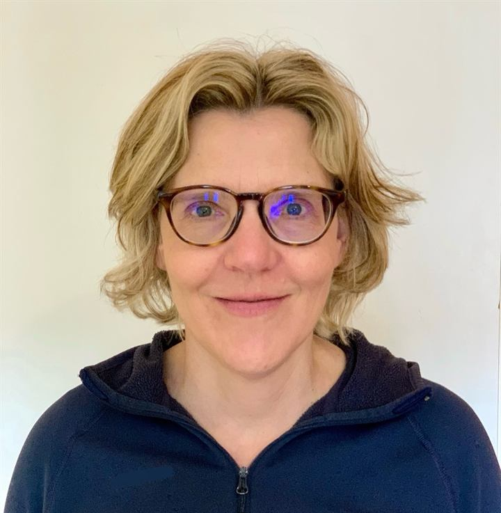
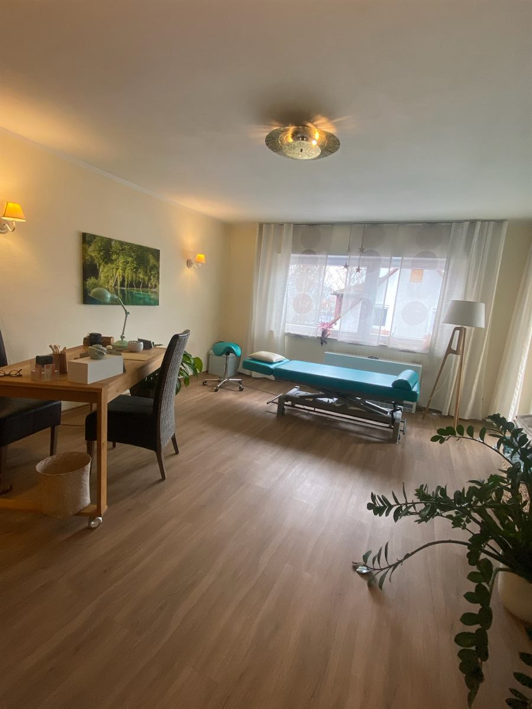
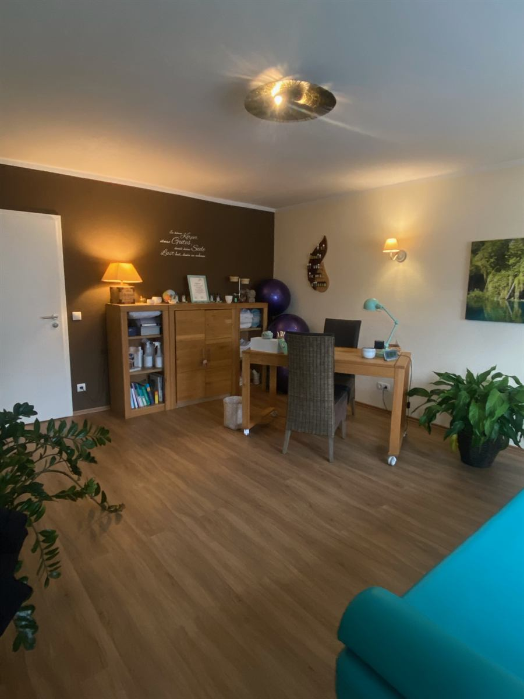
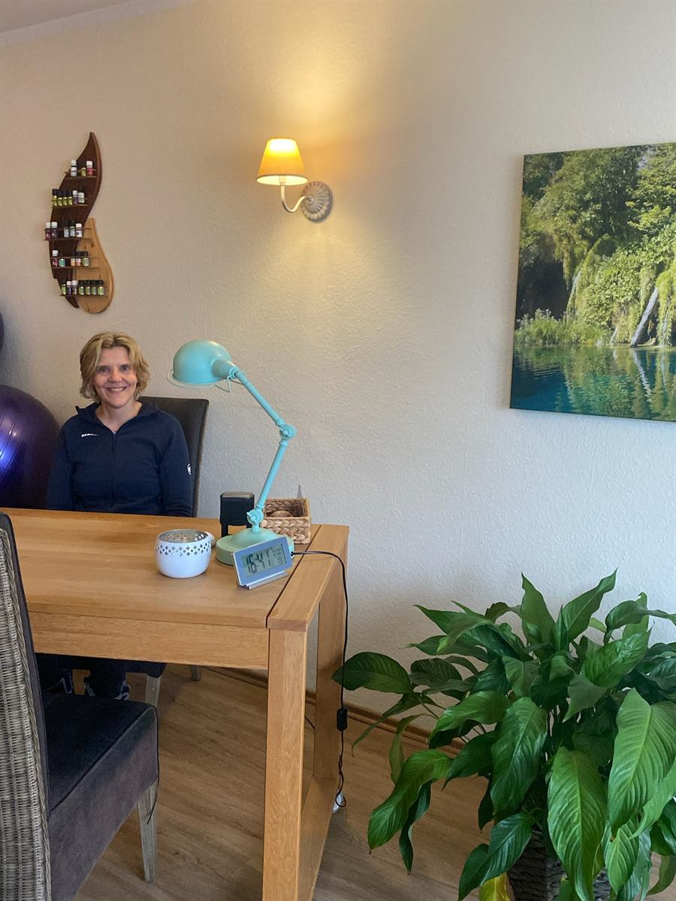

Krankengymnastik
Gezielte Übungen für mehr Beweglichkeit, Kraft und Koordination, zum Beispiel bei Rückenschmerzen oder nach Operationen.
Privatpraxis in Weinheim-Hohensachsen
Ich bin Christine Seifner, Physiotherapeutin und Heilpraktikerin für Physiotherapie. In meiner Praxis in Weinheim-Hohensachsen behandle ich Sie persönlich, auch ohne ärztliche Verordnung.

Über mich
Seit mehr als 30 Jahren arbeite ich als Physiotherapeutin und habe in drei verschiedenen Praxen sowie in zwei Kliniken wertvolle Berufserfahrung gesammelt. Durch meinen Beruf konnte ich mich intensiv mit dem menschlichen Körper, seiner Anatomie und Physiologie sowie den verschiedensten Krankheitsbildern auseinandersetzen.
In meiner Ausbildung zur Manualtherapeutin vertiefte ich meine Kenntnisse der funktionellen Anatomie und lernte eine Vielzahl an Techniken, um Gelenke und Wirbelsäule zu mobilisieren und zu stabilisieren.
Über die Cranio-Sakrale-Therapie, einen Teilbereich der Osteopathie, lernte ich die Ortho-Bionomy kennen. Beides sind ganzheitliche, sanfte Therapien, die mir helfen, den Körper als Einheit zu betrachten.
Durch Fort- und Weiterbildungen für die Lizenz im Rehasport (Orthopädie) habe ich mein Wissen über das Beckenbodentraining vertieft und gelernt, den Körper mit Kleingeräten wirbelsäulengerecht und gelenkschonend zu trainieren.
Als Heilpraktikerin für Physiotherapie darf ich Sie auch ohne ärztliche Verordnung untersuchen und behandeln. Ich freue mich auf Sie!
Leistungen
Gezielte Übungen für mehr Beweglichkeit, Kraft und Koordination, zum Beispiel bei Rückenschmerzen oder nach Operationen.
Spezielle Handgriffe, um Gelenke und Wirbelsäule sanft zu mobilisieren und zu stabilisieren.
Löst Verspannungen, fördert die Durchblutung und sorgt für spürbare Entspannung.
Reflektorische Massagetechnik, die über Haut und Bindegewebe wirkt.
Wohltuende, feuchte Wärme, die Muskeln entspannt und gut auf die Behandlung vorbereitet.
Gezielte Kälteanwendung, etwa bei Schwellungen und Reizzuständen.
Behandlung bei Ihnen zu Hause: in der Weinheimer Kernstadt sowie in Weinheim-Lützelsachsen und Weinheim-Hohensachsen.
Seit vielen Jahren leite ich mit großer Freude zertifizierte Kurse in Kleingruppen. Ziel ist eine bessere Haltung, Beweglichkeit und Muskelkraft, kombiniert mit gezielten Atemübungen sowie Elementen für Koordination und Ausdauer.
Zertifizierter Kurs: Die gesetzlichen Krankenkassen übernehmen ca. 80 % der Kosten.
Beckenbodentraining in kleiner Runde, mit Kleingeräten und gelenkschonend.
Preise
Die Praxis
Sie finden die Praxis in der Kaiserstraße 22 in Weinheim-Hohensachsen, im 1. Obergeschoss.



Häufige Fragen
Nein. Als Heilpraktikerin für Physiotherapie darf ich Sie auch ohne ärztliche Verordnung untersuchen und behandeln.
Ja, der Wirbelsäulengymnastikkurs ist zertifiziert. Die gesetzlichen Krankenkassen übernehmen ca. 80 % der Kosten.
Ja, in der Kernstadt Weinheim sowie in Weinheim-Lützelsachsen und Weinheim-Hohensachsen. Den Preis für einen Hausbesuch finden Sie in der Preisliste.
Am einfachsten telefonisch unter 01525 3751335 oder per E-Mail an physio@seifner.org.
Kontakt
Adresse
Kaiserstraße 22 (1. OG)
69469 Weinheim-Hohensachsen
Telefon +49 1525 3751 335
E-Mail physio@seifner.org
Route in Google Maps| Montag | geschlossen |
|---|---|
| Dienstag | geschlossen |
| Mittwoch | 8:00 – 20:00 Uhr |
| Donnerstag | geschlossen |
| Freitag | 8:00 – 15:00 Uhr |
| Samstag | geschlossen |
| Sonntag | geschlossen |
Termine nach Vereinbarung.